1. What a NAT gateway is
Azure NAT Gateway is a managed service that gives every resource in a subnet outbound internet access through one or more static public IP addresses. The resources themselves keep only private IPs.
- Outbound only. A VM can start a connection to the internet and receive the reply. Nothing on the internet can start a connection to the VM through the gateway.
- Attached to subnets. You associate the gateway with a subnet, and all VMs in that subnet use it. One gateway can serve several subnets in the same virtual network.
- No routing work. You do not edit a route table. Once the subnet is associated, outbound traffic takes the gateway automatically.
- A predictable source IP. Every outbound connection leaves from the gateway's public IP, which is useful when a partner has to allow-list your address.
2. Why it matters now
For years, an Azure VM with no public IP still reached the internet through a hidden "default outbound access" address. Microsoft has retired that behaviour for new networks: virtual networks created after 31 March 2026 get private subnets by default, and a VM in a private subnet has no outbound internet path until you configure one.
The explicit options are a NAT gateway, a public IP on the VM, load balancer outbound rules, or a firewall. For plain outbound access, the NAT gateway is the one Microsoft recommends.
3. Lab setup
| Item | Value |
|---|---|
| Region | West US 3 |
| Resource group | scslabs-rg |
| Virtual network | vnet-westus3-2 (10.0.0.0/16) |
| Subnet | snet-westus3-2 (10.0.0.0/24) |
| Test VM | scsubtusrv02, Linux, private IP 10.0.0.4 |
| NAT gateway | NGW-1, StandardV2 SKU |
Before starting, I checked the VM's outbound access with a ping to google.com. The name resolves to an IP address, so DNS works, but no reply comes back.
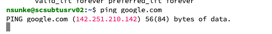
4. Create the NAT gateway
Step 1Open NAT gateways
In the portal, go to Network foundation → NAT gateways. The list is empty. Click Create.
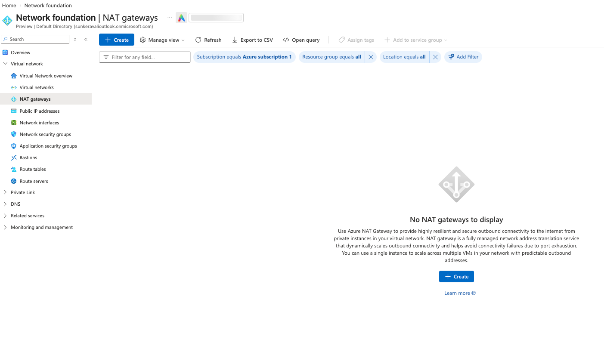
Step 2Basics tab
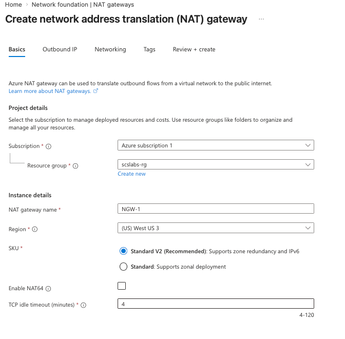
NGW-1.| Field | Value used | What it means |
|---|---|---|
| Region | West US 3 | Must be the same region as the virtual network. |
| SKU | Standard V2 | Zone-redundant, with IPv6 support. The older Standard SKU runs in a single availability zone. Both are priced the same. |
| Enable NAT64 | Unticked | Lets IPv6-only workloads reach IPv4 destinations. Not needed here. |
| TCP idle timeout | 4 minutes | How long an idle TCP connection is kept before the gateway drops it. The range is 4 to 120 minutes. |
Step 3Networking tab
Pick the virtual network and the subnet that should use the gateway.
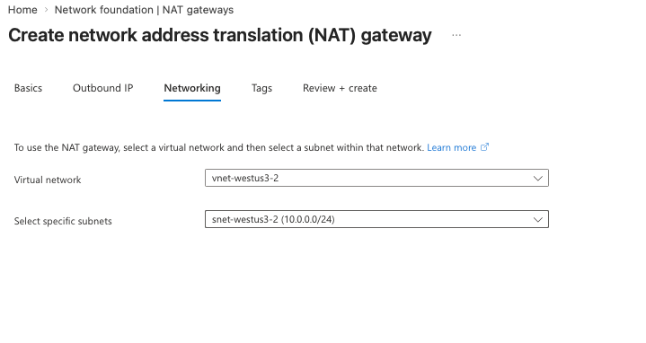
snet-westus3-2 with the gateway.Step 4Review + create
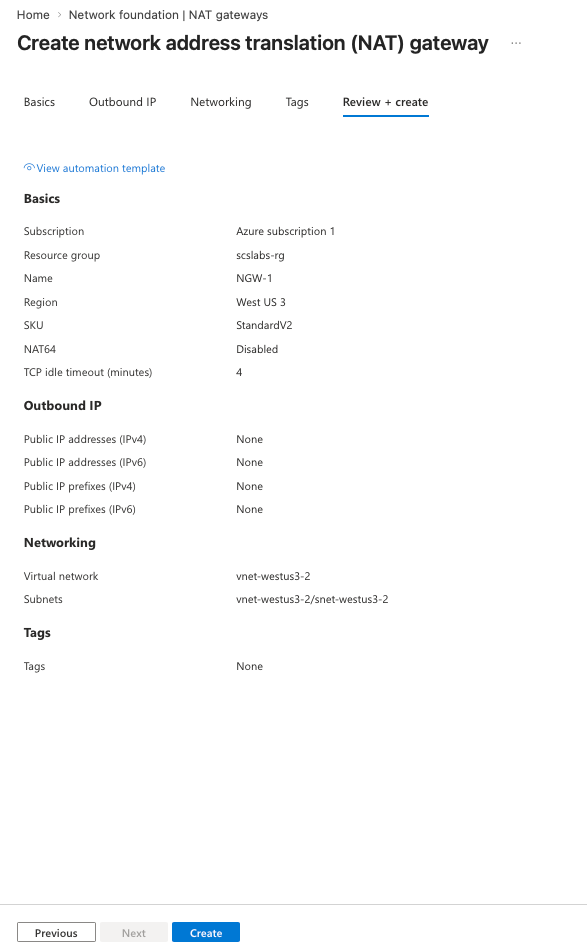
Validation passed, I clicked Create, and the gateway appeared in the list a few seconds later.
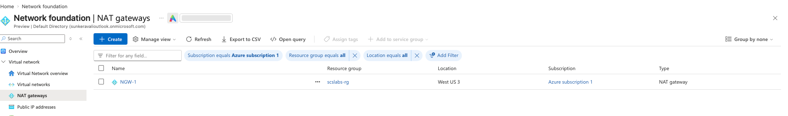
NGW-1 deployed.5. The problem: still no internet
With the gateway deployed and the subnet associated, I ran the ping again. It still hung.
The gateway's Overview page explains why. An orange banner reads "Your subnet(s) do not have outbound connectivity. Add a public IP or public IP prefix", and the Essentials panel shows Public IP addresses: 0.
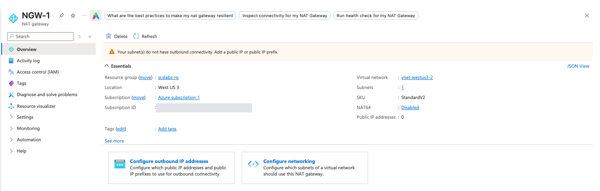
NGW-1: one subnet attached, zero public IPs.A NAT gateway translates private source addresses to a public one. With no public IP it has nothing to translate to, so it cannot send any traffic out. Because the gateway becomes the subnet's outbound path as soon as it is associated, an empty gateway leaves the subnet with no outbound route at all.
6. The fix: add an outbound public IP
On the gateway, open Settings → Outbound IP and click Edit. In the side panel, choose Create a public IP address and give it a name. I called mine nat-pip.
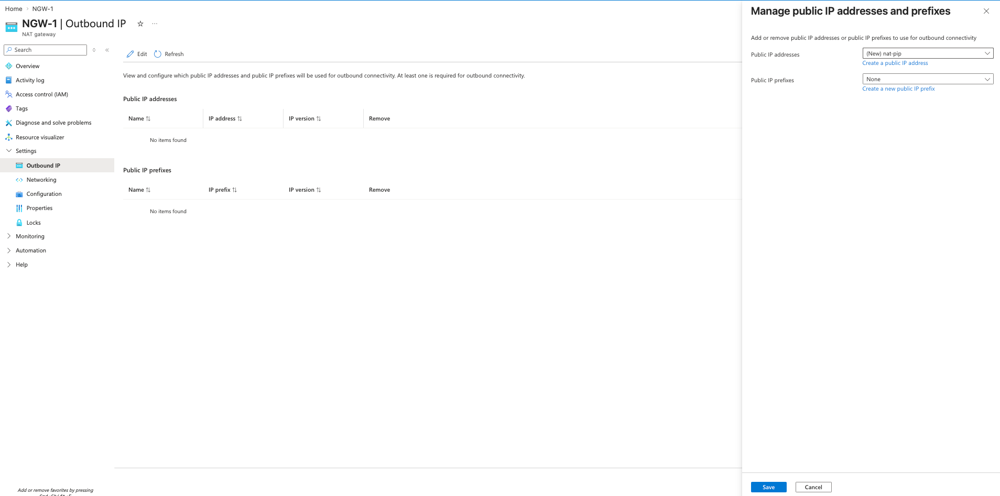
After saving, the new address is listed under Public IP addresses.
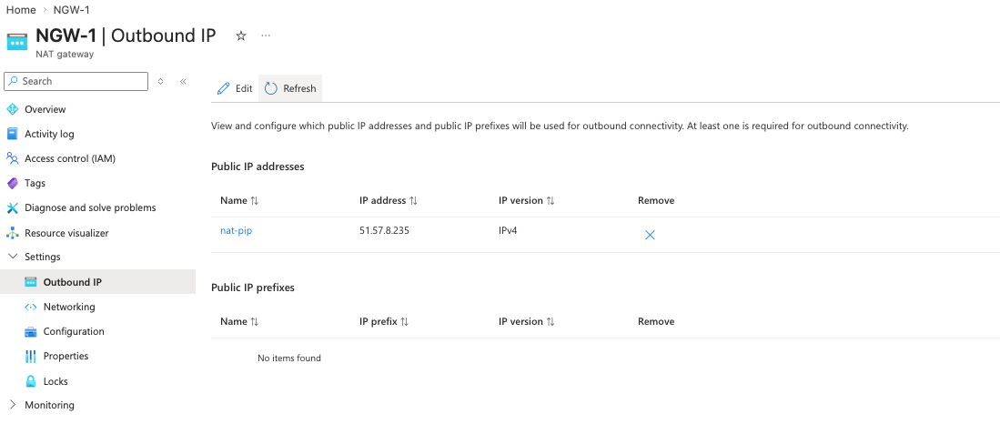
nat-pip attached to NGW-1. All outbound traffic from the subnet now leaves from this address.7. Test the connection
Back on the VM, the same ping now gets replies in about 3 ms.
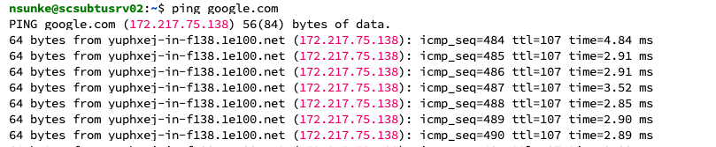
google.com.Two more checks are worth running:
# A TCP test, which is closer to what applications actually do
curl -I https://www.google.com
# Shows the public IP the internet sees. It should match nat-pip.
curl ifconfig.mecurl or nc instead.
8. The subnet side of the setup
The same association can be viewed or changed from the subnet. Open the virtual network, go to Subnets, and select the subnet.
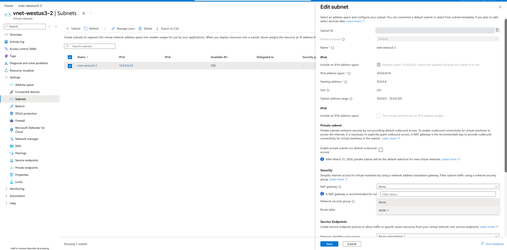
- NAT gateway dropdown. Choose the gateway here to associate it with the subnet, or set it to None to detach it.
- Enable private subnet. Ticking this turns off default outbound access for the subnet. With it ticked, the NAT gateway becomes the only way out, which is the secure setup to aim for.
- The portal's own reminder. The panel notes that private subnet is the default selection for new virtual networks after 31 March 2026.
9. Azure CLI version
The same lab from the command line. The StandardV2 SKU needs a recent Azure CLI version, so run az upgrade first if a command rejects the SKU value.
# 1. Public IP for the gateway (StandardV2 to match the gateway SKU)
az network public-ip create \
--resource-group scslabs-rg \
--name nat-pip \
--sku StandardV2
# 2. NAT gateway with the public IP attached
az network nat gateway create \
--resource-group scslabs-rg \
--name NGW-1 \
--sku StandardV2 \
--public-ip-addresses nat-pip \
--idle-timeout 4
# 3. Associate the subnet
az network vnet subnet update \
--resource-group scslabs-rg \
--vnet-name vnet-westus3-2 \
--name snet-westus3-2 \
--nat-gateway NGW-1Doing it in this order means the gateway never exists without a public IP, which avoids the problem from section 5.
10. Best practices
- Never skip the Outbound IP tab. On the Review + create page, confirm that at least one public IP or prefix is listed before you click Create.
- Use StandardV2 for production. It is zone-redundant and costs the same as Standard. A Standard gateway cannot be upgraded later, so choose at creation time.
- Check StandardV2 limitations first. Some regions and some delegated subnets are not supported. Read the current limitations list before you design around it.
- Make the subnet private. Disable default outbound access so the NAT gateway is the only path, and remove public IPs from the VMs. Use Azure Bastion for admin access.
- Plan for SNAT ports. Each public IP provides 64,512 SNAT ports. Add more IPs or a public IP prefix when many VMs open many connections.
- Do not mix outbound methods. If a subnet has both a NAT gateway and load balancer outbound rules, the NAT gateway takes precedence.
- Keep Azure service traffic off the gateway. Use private endpoints or service endpoints for Storage, SQL and similar services so that traffic does not incur NAT data charges.
- Remember it is per virtual network. A NAT gateway serves subnets in its own VNet only. A peered VNet cannot use it directly.
- Monitor it. Watch the SNAT connection count and dropped packets metrics in Azure Monitor.
11. Cost and clean-up
A NAT gateway is not free. Billing has two parts: an hourly charge for as long as the gateway exists, and a per-GB charge for data it processes, counting both outbound traffic and the replies. At the time of writing both are commonly quoted at about $0.045, per hour and per GB, but check the Azure pricing page for your region. The public IP is billed separately.
# Detach the gateway from the subnet
az network vnet subnet update \
--resource-group scslabs-rg \
--vnet-name vnet-westus3-2 \
--name snet-westus3-2 \
--remove natGateway
# Delete the gateway, then its public IP
az network nat gateway delete --resource-group scslabs-rg --name NGW-1
az network public-ip delete --resource-group scslabs-rg --name nat-pipKey takeaways
- A NAT gateway gives a whole subnet outbound internet access through a static public IP, with no inbound exposure.
- It needs three things to work: the gateway, at least one public IP, and a subnet association. Missing any one of them means no internet.
- If outbound access fails, look at the gateway's Overview page first. The warning banner and the public IP count tell you most of what you need.
- New virtual networks default to private subnets, so an explicit outbound method is now part of every network design.